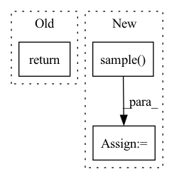

Pattern ID :2311

Before Change
*,
text
):
return image
After Change
text = self.tokenizer.encode(text)
image_embed = prior.sample(text, num_samples_per_batch = 2)
images = decoder.sample(image_embed)
return images
In pattern: SUPERPATTERN
Frequency: 4
Non-data size: 3
Instances
Fragment ID: 14322856
Project Name: lucidrains/dalle2-pytorch
Commit Name: 862e5ba50e48fcb0f4e1370c46b763a4760a30cf
Time: 2022-04-12
Author: lucidrains@gmail.com
File Name: dalle2_pytorch/dalle2_pytorch.py
M Class Name: DALLE2
N Class Name: DALLE2
M Method Name: forward(1)
N Method Name: forward(1)
M Parent Class: nn.Module
N Parent Class: nn.Module
M File Name: dalle2_pytorch/dalle2_pytorch.py
N File Name: dalle2_pytorch/dalle2_pytorch.py
M Start Line: 490
M End Line: 490
N Start Line: 488
N End Line: 494
'>
Before Change
a = t.relu(self.fc1(state))
a = t.relu(self.fc2(a))
a = t.tanh(self.fc3(a)) * self.action_range
return a
class ActorDiscreet(nn.Module):
After Change
dist = Normal(mu, sigma)
act = (action
if action is not None
else dist.sample())
act_entropy = dist.entropy()
act_log_prob = dist.log_prob(act)
return act, act_log_prob, act_entropy
'>
Fragment ID: 14322848
Project Name: iffix/machin
Commit Name: 5b8a19f67832501f89f0861dca751b9e6978e63d
Time: 2020-06-16
Author: hanhanmumuqq@163.com
File Name: test/frame/algorithms/test_sac.py
M Class Name: Actor
N Class Name: Actor
M Method Name: forward(3)
N Method Name: forward(2)
M Parent Class: nn.Module
N Parent Class: nn.Module
M File Name: test/frame/algorithms/test_sac.py
N File Name: test/frame/algorithms/test_sac.py
M Start Line: 30
M End Line: 31
N Start Line: 30
N End Line: 41
'>
Before Change
log_std = self.std_clamp(log_std)
return mean, log_std
if __name__ == "__main__":
After Change
log_std = self.std_clamp(log_std)
std = log_std.exp()
m = MultivariateNormal(mean.reshape(-1), torch.diag(std.reshape(-1)))
action = m.sample()
action = action.reshape(mean.shape)
action = action.tanh()
'>
Fragment ID: 14322854
Project Name: tmdt-buw/karolos
Commit Name: 39ca64b6106c80c48f0605a15cde575769fad233
Time: 2020-04-23
Author: scheiderer@uni-wuppertal.de
File Name: agents/nnfactory/sac.py
M Class Name: Policy
N Class Name: Policy
M Method Name: forward(3)
N Method Name: forward(2)
M Parent Class: nn.Module
N Parent Class: nn.Module
M File Name: agents/nnfactory/sac.py
N File Name: agents/nnfactory/sac.py
M Start Line: 100
M End Line: 102
N Start Line: 95
N End Line: 115
'>
Before Change
super().__init__()
def forward(self, x):
return x
class Student(nn.Module):
def __init__(
After Change
return_action_categorical_dist = True
)
action = dist.sample()
action_log_probs = dist.log_prob(actions)
entropy = dist.entropy()
ratios = (action_log_probs - old_log_probs).exp()
'>
Fragment ID: 14322855
Project Name: lucidrains/anymal-belief-state-encoder-decoder-pytorch
Commit Name: 6a860f5856bae89865c3943e580d10de277fb2ef
Time: 2022-04-17
Author: lucidrains@gmail.com
File Name: anymal_belief_state_encoder_decoder_pytorch/networks.py
M Class Name: PPO
N Class Name: PPO
M Method Name: forward(5)
N Method Name: forward(2)
M Parent Class: nn.Module
N Parent Class: nn.Module
M File Name: anymal_belief_state_encoder_decoder_pytorch/networks.py
N File Name: anymal_belief_state_encoder_decoder_pytorch/networks.py
M Start Line: 77
M End Line: 78
N Start Line: 87
N End Line: 110